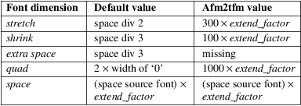
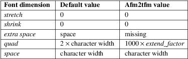

afm2pl − convert AFM font metrics to TeX pl font metrics
|
afm2pl [−p encoding_file] [−o] [−e extension_factor] [−s slant_factor] [−f font_dimensions] [−k] [−m letter_spacing] [−l ligkern_spec] [−L ligkern_spec] [−n] input_file[.afm] [output_file[.pl]] | |
|
afm2pl [−−help] | [−−version] |
afm2pl converts an afm (Adobe Font Metric) file into a pl (Property List) file, which in its turn can be converted to a tfm (TeX Font Metric) file. It normally preserves kerns and ligatures, but also offers additional control over them.
afm2pl is meant to be a partial replacement for afm2tfm, on which it is based. With afm2tfm, preserving kerns and ligatures is possible only in a roundabout way, and handling of them is hard−wired.
For text fonts, Y&Y´s texnansi is a good encoding to be used with afm2pl. Its character set includes all the accented characters likely to be needed for Western languages, plus many typographic symbols, without a need for either virtual fonts or a separate text companion font.
Full LaTeX support for this encoding is available in the form of the texnansi package, which is already part of TeX Live and teTeX. These distributions also contain the encoding file texnansi.enc.
The distribution contains uppercased and lowercased versions of texnansi, viz. texnanuc and texnanlc, to allow font−based rather than macro−based uppercasing and lowercasing, and the familiar old ot1 encoding plus some variations in PostScript .enc format (I included these because they seem to be absent from teTeX/TeX Live). However, check your mapfiles if you have old afm2pl−generated fonts using these.
Return value: 0 if no error; a negative number indicating the number of missing glyphs if conversion was otherwise successful but glyphs are missing, and 1 in case of error.
−p encoding_file
The default is the encoding specified in the afm file, which had better match the encoding in the fontfile (pfa or pfb). If afm2pl−name.enc exists, afm2pl will use this file instead of name.enc, unless an option −n is given. The generated mapfile entry (see below) instructs pdftex or the dvi driver to re-encode the font on the fly. On−the−fly reencoding does not require virtual fonts.
−o
Use octal for all character codes in the pl file.
−e extend_factor
Widen or narrow characters by extend_factor. Default is 1.0 (natural width). Not recommended[1].
−s slant_factor
Oblique (slant) characters by slant_factor. Not recommended either.
−f font_dimensions
The value is either the keyword afm2tfm or a comma−separated list of up to five integers. The parameters are listed below, with their defaults and their value when the afm2tfm keyword is specified. ‘Space’ means the width of a space in the target font, except of course in the last row. Keep in mind that the design size is 1000, and that all numbers must be nonnegative integers.

For fixed−pitch fonts, different values apply:

Specify just a non−default stretch and shrink with e.g. 150,70 and just a non−default extra space with ,,10.
−k
Keep original ligatures. This option only has effect in combination with positive letterspacing; see the section on letterspacing and extra ligkern info.
−m letter_spacing
Letterspace by letter_spacing/1000 em (integer). This is useful for making all−caps typesetting look better. Try a value of e.g. 50 or 100. But see the section on letterspacing and extra ligkern info for details. A better alternative, though, is letting pdftex do the letterspacing. The microtype package gives LaTeX users access to this feature.
−l ligkern_spec, −L ligkern_spec
See the section on extra ligkern info for details.
−n
No prefix. For .enc− and .lig files, the program normally first prefixes the name with ‘afm2pl−´. Only if the prefixed filename is not found, will it search for the original filename. This option prevents searching for the prefixed filename.
−V
Verbose. If turned on, it reports the number of missing glyphs to stderr and their names to stdout.
−−help
Display a short usage message.
−−version
Display the version number of afm2pl.
afm2pl writes a mapfile entry to a file with the same basename as the pl output file, but with extension .map. It can be used for the dvips mapfile and for the pdftex mapfile. It is assumed that the pfb file has the same basename as the afm file and must be downloaded. You may have to hand−edit this entry.
You can configure dvips and pdftex to read this additional mapfile or otherwise add the entry to an existing mapfile.
Check your mapfiles! To reduce the likelihood of name conflicts, the .enc− files which are part of afm2pl (ot1, ot1csc, ot1ital, ot1tt, texnanlc and texnanuc) have now been prepended with afm2pl−. The .enc files are referenced in mapfiles. If you have old afm2pl−generated .tfm files using these, then you should update their mapfile fragments and rerun updmap or updmap−sys. Or you can copy the relevant enc files to your personal or local texmf tree under their previous non−prefixed names.
Most users are well−advised to leave this mess alone and to accept the default behavior.
The ligatures and kerns present in the afm file can be modified in various ways. Default, the encoding file is scanned for extra ligkern specifications, whose format will be described below. If there are no ligkern specifications in the encoding file, then extra ligkern specifications will be read from a file [afm2pl−]default.lig. A value of 0 for ligkern_spec means that the ligatures and kerns from the afm file won´t be tampered with and a value of 1 specifies default behavior. One can also specify a comma−separated list of files with extra ligkerns specs.
If afm2pl is compiled with the kpathsea library, then these files will be searched for under $TEXMF/fonts/lig.
Note that ligatures and kerns are hints for the typesetting application; there is no need to download this information to the printer or to make it available to a dvi driver.
The parser for ligkern info has been inherited from afm2tfm virtually without change. A ligkern specification can have one of the following forms:
glyph_name1 glyph_name2 lig_op glyph_name3 ;
This specifies a ligature. Possible values for lig_op are =:, |=:, |=:>, =:|, =:|>, |=:|, |=:|> and |=:|>>. These correspond to LIG, /LIG, /LIG>, LIG/, LIG/>, /LIG/, /LIG/>, /LIG/>> in .pl syntax; see the pltotf documentation and the .lig files in the distribution.
glyph_name1 <> glyph_name2 ;
Kern glyph_name1 as glyph_name2.
glyph_name1 {} glyph_name2 ;
Remove the kern between glyph_name1 and glyph_name2. A value of * for either glyph name is interpreted as a wildcard.
|| = glyph ;
Set the (right) boundary character to glyph. glyph may be either a glyphname or a slot in the encoding vector. Choosing a glyph which doesn´t occur in the output encoding is equivalent to not specifying a boundarychar at all. It is ok to pick an encoded glyphname which does not occur in the afm. In fact, this is what default.lig does: || = cwm ;.
You can copy the kerns of an unencoded character to the boundarychar. Below, space is the unencoded character:
|| <> space ;
This ligkern specification should occur before the one that deletes space kerns.
A ligkern specification should be contained within one line. One line may contain several ligkern specifications, separated by spaces. Note that ; (space followed by semicolon) is considered part of the ligkern specification. See the lig files included in this distribution. Example:
one {} * ; * {} one ; two {} * ; * {} two ;
Lines with ligkern specifications inside an encoding file should start with % LIGKERN. Ligkern specifications in a lig file may optionally start this way.
Letterspacing has various side−effects for ligkern info. Instead of simply applying the extra ligkern info (see previous section), the following is done:
|
1. |
In case of positive letterspacing, native ligatures are removed, unless the −k option is specified. | ||
|
2. |
Extra ligkern info is applied as usual, except that in case of positive letterspacing different defaults apply: −l 0 is quietly ignored, ligkern comments in the encoding file are ignored, and defpre.lig is read instead of default.lig. | ||
|
3. |
Letterspacing is applied. This adds a lot of kerns, and modifies existing kerns. | ||
|
4. |
The extra ligkern info specified with −L is applied. The only ligkern specs which are allowed here, are removals of kerning pairs (with the {} operator). Values 0 and 1 have a similar meaning as for the −l parameter. The tfm format has room for only about 180x180 ligatures and kerning pairs. This is enough for OT1 encoding, but for texnansi encoding quite a few ligkern specifications have to be removed. The pltotf program will remove all ligkern info if too many ligatures and kerns remain. The default lig file is defpost.lig. This file throws out kerning pairs which are unlikely to be involved in letterspacing, such as kerns involving accents or kerns with a punctuation character or right bracket at the left. It does not add letterspacing kerns involving boundarychars. Instead, fontspace is increased by twice the letterspacing. defpost.lig throws out enough kerns in case of texnansi encoding. With other encodings, you may have to throw out additional kerning pairs. |
The distribution includes encoding vectors texnanuc.enc and texnanlc.enc which produce all−uppercase and all−lowercase fonts
The principal uses for an all−uppercase font are page headers and section heads. If these contain math, then macro−based uppercasing would create unpleasant complications. Example:
afm2pl −p
texnanuc ptmr8a ptmup8y
pltotf ptmup8y
For best results, you should add some letterspacing. In LaTeX, this is best done with the microtype package; see the documentation of that package. But it can also be done with afm2pl:
afm2pl −p texnanuc −m 100 ptmr8a ptmup8y
This requires caution; see above.
You can use this new font within the context of LaTeX font selection as follows:
<preamble
commands>
\makeatletter
{\nfss@catcodes
\DeclareFontShape{LY1}{ptm}{m}{upp}{<−>
ptmup8y}{}}
\makeatother
...
\begin{document}
...
{\fontshape{upp}\selectfont uppercase text}
Note that upp is simply a newly made−up shape name.
The sz
ligature ß
Note that the texnanuc encoding provides no glyph for the sz
ligature ß; you´ll either have to substitute ss
or provide a macro−based solution. The following code
uses either the usual glyph or substitutes the letters ss,
depending on whether the glyph exists in the current
font:
\def\ss{%
\setbox0\hbox{\char25}%
\ifnum\wd0=0 ss\else\box0\fi
}
In LaTeX, this code appears to work well enough, although on occasion you may need to insert \protect. A better solution might involve the sixth parameter of the \DeclareFontShape macro, but I failed to get that to work.
Afm2pl doesn´t do virtual fonts. That means that for things such as artificial smallcaps you have to turn elsewhere, e.g. to the fontinst package, which is part of any mainstream TeX distribution.
Look under texmf/tex/fontinst for fontinst support files, which allow you to generate a smallcaps font (tfm and vf files) from an afm2pl−generated tfm file. This package only supports texnansi encoding.
There should be no real problem in doing the same for OT1 encoding. However, there are several variations of the OT1 encoding to take care of. Also, there are as far as I know no officially sanctioned PostScript names for all the variations of the OT1 encoding; the fontinst names contain spaces and are therefore not useable as PostScript names.
In order to avoid name conflicts, the .enc− and .lig files distributed with afm2pl got afm2pl− prepended to their name. The program itself now first searches for the thus prepended name. If the .enc− or .lig file is not found it will look for the original filename. The renaming of the afm2pl .enc files may require modification of some mapfiles.
The afm2pl homepage is http://tex.aanhet.net/afm2pl/.
The paper Font installation the shallow way[2] (EuroTeX 2006 Proceedings, published as TUGboat[3] issue 27.1) illustrates the use of afm2pl.
|
1. |
Except that arguably a narrowed Courier is less jarring than a full-width Courier, when used in combination with a normal proportional font. For Courier, choose .833 to match the width of cmtt. Better yet, don’t use Courier at all; most TeX distributions offer various good replacements. | ||
|
2. |
Font installation the shallow way |
https://tug.org/TUGboat/tb27-1/tb86kroonenberg-fonts.pdf
afm2pl is maintained as part of TeX Live.